Обзор рынка коммерческой недвижимости за I квартал 2026 года
Анализ по сегментам коммерческой недвижимости
Казань. Торговая недвижимость
Ключевые показатели рынка торговой недвижимости Казани
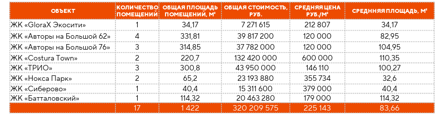
Обеспеченность Казани качественными торговыми центрами попрежнему невысокая по сравнению с другими городами миллионниками, в тоже время количество менее качественных объектов значительное.
Предложение
Совокупное предложение в сегменте торговых центров представлено 32 объектами, общей площадью 1,1 млн м² (учитывались торговые центры общей площадью свыше 3 000 м²). Наиболее качественных торговых центров в Казани 8 шт. Общая площадь качественных объектов 575 тыс. м², арендуемая 351 тыс. м². В выборку попали объекты современного формата, с актуальным составом арендаторов, включающим микс федеральных, международных и локальных брендов.
Качественные торговые центры Казани
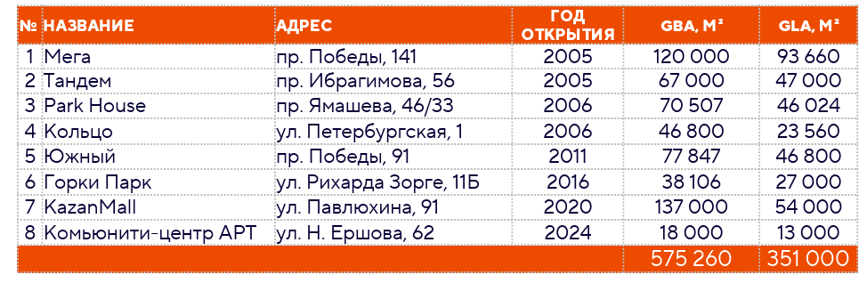
Новое строительство
В I квартале 2026 года ввод новых объектов на рынке торговых центров г. Казани не зафиксирован. По состоянию на текущий момент запуск крупных торговых центров в течение 2026 года не ожидается. Вместе с тем в агломерации Казани, в селе Усады Лаишевского муниципального района Республики Татарстан, девелоперская группа «Суварстроит» ведёт строительство районного торгового центра общей площадью около 5 тыс. м², планируемый срок сдачи – III квартал 2026 года.
Вакансия
По состоянию на конец марта 2026 года уровень вакансии составил 5%, уменьшившись на 1 п. п. в сравнении с IV кварталом 2025 года. В количественном выражении объем свободных торговых площадей составил 19 тыс. м². По сравнению с аналогичным периодом 2025 года показатель также снизился на 1 п. п. Расчёт доли вакантных площадей произведён на основании визуального осмотра. В расчёте учитываются площади помещений, в которых не ведётся коммерческая деятельность. При этом договор аренды может быть подписан.
Спрос
В I квартале 2026 года рынок торговых центров Казани показывает снижение числа новых арендаторов по сравнению с аналогичным периодом прошлого года. За три месяца было открыто 13 новых магазинов, тогда как в I квартале 2025 года таких открытий было 16. В I квартале 2026 года число закрытых магазинов составило 29 объектов, что почти в три раза превышает показатель аналогичного периода 2025 года, когда было зафиксировано 11 закрытий. Увеличение закрытий связано с естественной ротацией арендаторов, корректировкой товарной стратегии и обновлением концепции торговых площадей. Несмотря на рост числа закрытий, текущая вакансия в торговых центрах удерживается на уровне около 5%, что соответствует норме для стабильного рынка.
Открытия новых магазинов в I квартале 2026 годаГеография
Распределение торговых центров в Казани
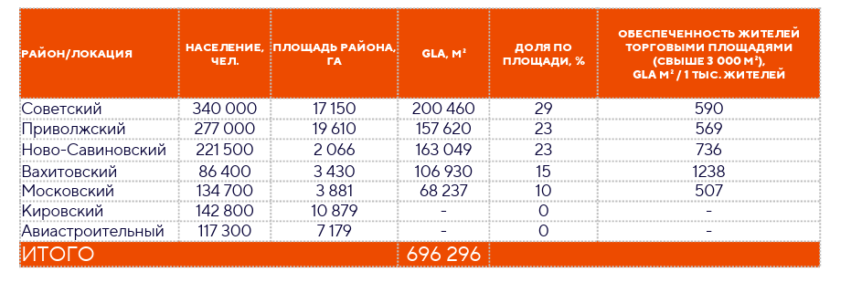
Основной объем предложения торговых центров в Казани сосредоточен в Советском, Приволжском и Ново-Савиновском районах, на которые приходится более 75% совокупной арендуемой площади (GLA). Наиболее высокая обеспеченность наблюдается в Вахитовском и Ново-Савиновском районах, что обусловлено сочетанием значительного объёма торговых площадей и более высокой плотности населения. В то же время Московский район при сопоставимой численности населения демонстрирует более низкие показатели обеспеченности, что может указывать на определённый потенциал для увеличения объёма торговых площадей. В Кировском и Авиастроительном районах нет качественных торговых объектов, что формирует потенциал для нового девелопмента. В других районах возможности появления новых объектов ограничены и связаны преимущественно с редевелопментом и точечной застройкой. В дальнейшем развитие рынка будет определяться динамикой жилищного строительства и смещением спроса в агломерацию.Стрит-ритейл
Сегмент стрит-ритейла Казани представляет собой важную часть городской коммерческой инфраструктуры, формируя основные торговые коридоры и обеспечивая прямой контакт арендаторов с потребительским потоком. В текущих условиях конкурентоспособность объектов определяется совокупностью факторов, включая плотность населения, интенсивность пешеходного потока, транспортную доступность, фасадную экспозицию, а также возможность гибкого использования помещений под различные форматы бизнеса. По данным ДОМ.РФ, в январе–феврале 2026 года на рынке стрит-ритейла Казани было зафиксировано ограниченное количество сделок с коммерческими помещениями в составе жилых комплексов. Всего было реализовано 17 помещений общей площадью порядка 1,4 тыс. м², при совокупной стоимости сделок 320 млн руб. Средневзвешенная стоимость продажи по данным сделкам составила 225 тыс. руб. за м², при этом средняя площадь реализуемых лотов находилась в диапазоне 80–85 м², что соответствует типичному формату помещений под сервисные функции. Ценовой диапазон сделок демонстрирует существенную дифференциацию в зависимости от проекта и локации: от 120 тыс. руб. за м² в ряде жилых комплексов до 600 тыс. руб. за м² в объектах с премиальным позиционированием. В рассматриваемом периоде ипотечные сделки не зафиксированы.
Сделки купли-продажи коммерческих помещений в формате стрит-ритейла в Казани, январь–февраль 2026 г.
Средневзвешенная цена продажи коммерческих помещений в Казани, которая, на конец марта 2026 года, составила для первичных объектов — 372 527 руб./м², для вторичных объектов — 248 676 руб./м². При этом под первичными объектами подразумеваются помещения без отделки, вторичные — все остальные объекты.
Анализ рынка аренды стрит-ритейла в Казани проведён на основе объектов, расположенных преимущественно в зонах жилой застройки последних лет, где представлен стрит-ритейл. В случаях отсутствия таких объектов выборка дополнялась данными по основным торговым коридорам районов города. В работе использованы данные порядка 250 объявлений сервиса Avito. Также на основе собранных данных была рассчитана средневзвешенная ставка аренды коммерческих помещений в Казани, которая, на конец марта 2026 года, составила для первичных объектов — 2 050 руб./м², для вторичных объектов — 1 750 руб./м². При этом под первичными объектами подразумеваются помещения без отделки, вторичные — все остальные объекты.
Ставки аренды на помещения формата стрит-ритейл, первичный рынок, с распределением по районам Казани и площади помещений, руб./м²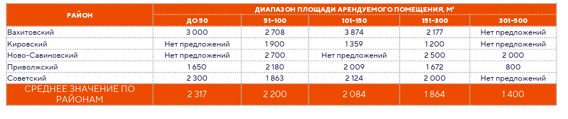
Ставки аренды на помещения формата стрит-ритейл, вторичный рынок, с распределением по районам Казани и площади помещений, руб./м²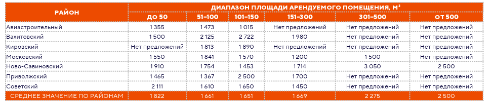
Анализ представленных данных показывает, что на рынке стрит-ритейла Казани прослеживается устойчивая зависимость уровня арендных ставок от площади помещений: наибольшие значения характерны для помещений площадью до 150 м², тогда как по мере увеличения площади ставки снижаются. Наиболее высокий уровень ставок фиксируется в центральных и наиболее развитых районах города, прежде всего в Вахитовском, а также в Ново-Савиновском и Советском районах, что обусловлено высокой плотностью населения, развитой инфраструктурой и значительным пешеходным трафиком. В то же время в периферийных районах, таких как Авиастроительный, Кировский, уровень ставок в среднем ниже, при этом в отдельных случаях возможны отклонения от среднерыночных значений, обусловленные индивидуальными характеристиками объектов. Дополнительно следует отметить ограниченность предложения в отдельных сегментах, особенно в диапазоне крупных площадей, где по ряду районов отсутствуют экспонируемые объекты, что может свидетельствовать как о невысокой представленности подобных форматов, так и о низкой ротации арендаторов в них.
Вторичный рынок при этом характеризуется более широким разбросом ставок, что связано с различиями в качестве помещений, их местоположении и техническом состоянии. Данные о ценах на коммерческие помещения, размещённые на открытых интернет-платформах, отражают лишь часть рынка и могут не в полной мере соответствовать фактическим условиям заключаемых сделок. Такие объекты, как правило, экспонируются дольше, пользуются меньшим спросом и чаще представляют собой предложения, менее привлекательные для арендаторов и инвесторов. В связи с этим результаты проведённого анализа как рынка продажи, так и аренды коммерческих помещений, основанные на данных экспозиции, следует рассматривать как ориентировочные и отражающие преимущественно параметры текущего предложения.
Новости и тенденции
- Немецкая сеть продуктовых гипермаркетов Globus рассматривает возможности расширения своей деятельности. При этом компания пока не ведёт переговоры о приобретении конкретных площадей.
- Розничные операторы переходят от противопоставления онлайн- и офлайн-каналов к их интеграции. Присутствие физической точки продаж в торговом центре становится элементом развития, обеспечивая прямое взаимодействие с продукцией. Возможность протестировать, увидеть и оценить товар формирует дополнительный сценарий взаимодействия с брендом. 1 октября 2026 года вступает в силу закон №289-ФЗ, который вводит требования к маркетплейсам, раскрытие алгоритмов, регулирование пунктов выдачи заказов, запрет на односторонние изменения договоров и ответственность за безопасность товаров.
- Новое предложение формируется малоформатными торговыми центрами.
- Арендные ставки в торговых центрах Казани показывают умеренный рост, в основном за счёт индексации действующих договоров. При этом арендаторы всё чаще запрашивают скидки или пересмотр условий.
Казань. Офисная недвижимость
Предложение
Совокупное качественное предложение в сегменте офисной недвижимости в Казани на конец марта 2026 года представлено 63 объектами, общей площадью более 620 тыс. м². Большая часть бизнес-центров относится к классу B и включает 43 объекта, тогда как сегменты класса A и B+ представлены 11 и 9 объектами, соответственно.Структура предложения бизнес-центров по классам, % от общей площади
Новое строительство
В I квартале 2026 года ввод новых объектов офисной недвижимости в Казани не зафиксирован. При этом на рынке продолжается реализация и подготовка ряда проектов. В частности, начинается реализация первой очереди многофункционального комплекса «Яр Парк», в рамках проекта предусмотрено строительство офисного центра, торговых помещений, конгресс-холл, фитнес-зоны, подземного паркинга и пятизвездочный отель. Также разработан эскизный проект офисного центра, планируемого к реализации на ул. Алексея Козина. Кроме того, на участке по ул. Чистопольской рассматривается реализация двух независимых проектов многофункционального комплекса и гостиницы общей площадью около 50 тыс. м². Помимо этого, продолжается строительство офисного центра на пересечении улиц Н. Ершова и Разведчика Ахмерова общей площадью порядка 5 тыс. м², планируемый срок сдачи – IV квартал 2026 года. Завершено строительство бизнес-центра класса A A5 Premium, объект находится на стадии получения заключения о соответствии (ЗОС).
Вакансия
По состоянию на конец марта 2026 года уровень вакансии в офисной недвижимости г. Казани составил 7,2% увеличившись на 0,5 п. п. в сравнении с предыдущим периодом. В количественном выражении объем свободных офисных площадей составил 34 тыс. м². По сравнению с аналогичным периодом 2025 года уровень вакансии вырос с 4% до 7,2%.
Спрос
За рассматриваемый период объём вакантных площадей в сегменте офисной недвижимости увеличился с 31650м² до 33764м², что соответствует отрицательному темпу заполнения –0,45% от общей арендопригодной площади. При этом общий уровень вакансии остаётся высоким — 7%. Такая динамика указывает на ограниченный спрос на офисные площади. Для дополнительной оценки динамики спроса на офисные помещения был проведен анализ поисковых запросов пользователей в сервисе Яндекс.Wordstat. В качестве базовых индикаторов использовались ключевые запросы «аренда офиса Казань» и «продажа офиса Казань», которые формируют основную часть поискового интереса пользователей. Анализ структуры запросов показывает, что данные формулировки в разные месяцы обеспечивают от 70% до 80% совокупного числа показов по тематике офисной недвижимости, что позволяет использовать их как репрезентативный индикатор динамики спроса.
По результатам анализа поисковых запросов в Яндекс.Wordstat, в I квартале 2026 года спрос на аренду офисов в Казани снизился на 31% по сравнению с тем же периодом 2025 года. Спрос на покупку офисов за тот же период увеличился на 15%, рост поисковых запросов на покупку офисов в I квартале 2026 свидетельствует преимущественно о повышенном интересе пользователей к мониторингу рынка и поиску выгодных предложений, а не о фактическом увеличении количества совершенных сделок. По данным ДОМ.РФ, в I квартале 2026 года продано 17 помещений в жилых комплексах, что косвенно указывает на умеренную активность и ограниченное число фактических сделок. Данные показатели также подкрепляются фактической активностью рынка, количество входящих запросов и обращений от потенциальных арендаторов и покупателей по результатам I квартала 2026 года низкое.
Динамика количества поисковых запросов по аренде офисов в Казани, шт.*
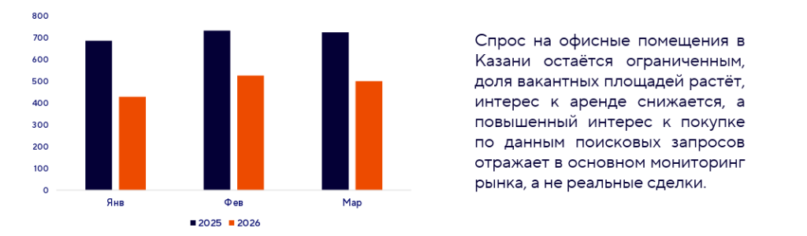
География: распределение предложения и спроса по ключевым районам/локациям
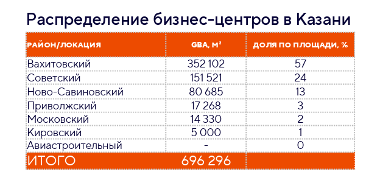
С точки зрения географической структуры предложения наибольшая часть бизнес-центров (около 80% совокупной площади) в Казани сосредоточена в Вахитовском и Советском районах, что соответствует деловому и историческому центру города. Из-за ограниченности участков в центре дальнейшее развитие рынка вероятнее на периферийных территориях, включая офисы в составе новых жилых комплексов. В последние годы основное новое строительство сосредоточено в Ново-Савиновском районе, где осваиваются территории вдоль акватории реки Казанки. Развитие офисной инфраструктуры здесь поддерживается хорошими транспортными связями через реку, создавая потенциал для дальнейшего роста предложения качественных офисных площадей.
Новости и тенденции
- В первом полугодии 2026 года ожидается продолжение высвобождения офисных площадей в связи с корректировкой потребностей арендаторов и переориентацией компаний на более компактные и доступные офисы.
- Сроки заключения договоров аренды увеличиваются, компании тщательно анализируют соответствие площадей своим бизнес-процессам и бюджетам, что требует от собственников большей гибкости в переговорах.
Казань. Складская недвижимость
Предложение
Качественное предложение в сегменте складской недвижимости города Казани и агломерации представлено индустриальными парками, собственными логистическими и распределительными центрами компаний, а также производственно-складскими комплексами спекулятивного формата. На конец марта 2026 года совокупная площадь качественных спекулятивных объектов и собственных распределительных центров составляет 995 тыс. м² из которых 572 тыс. м² приходится на производственно-складские комплексы спекулятивного формата, а 423 тыс. м² на собственные распределительные центры.
Производственно-складские комплексы спекулятивного формата в Казани и агломерации
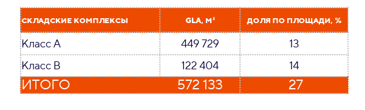
Новое строительство
В I квартале 2026 года ввод новых объектов складской недвижимости в Казани не зафиксирован. При этом девелоперская активность сохраняется. В индустриальном парке «Дружба» завершено строительство первой очереди складского комплекса общей площадью порядка 20 тыс. м², реализованного для Яндекса. Объект находится на стадии получения заключения о соответствии (ЗОС) и пока не введен в эксплуатацию. Параллельно начата реализация второй очереди площадью около 20 тыс. м², из которых порядка 10 тыс. м² займет «Самокат», в составе объекта предусмотрен мультитемпературный склад. Кроме того, в NK-парке ведётся строительство складского комплекса в формате built-to-suit для «Татспиртпрома» общей площадью порядка 45 тыс. м². Также DoorHan реализует складской комплекс общей площадью порядка 52 тыс. м² с планируемым делением на блоки площадью 3,5–3,6 тыс. м².
В Кощаковском сельском поселении Республики Татарстан ведётся строительство первой очереди складского комплекса общей площадью 35 тыс. м². Девелопером проекта выступает группа компаний бенефициаром которой является Смирнов Сергей Климович (владелец здания бывшего Selgros Cash&Carry). Совокупно с учётом ввода в эксплуатацию всех строящихся качественных складских объектов в 2026 году предложение увеличится на 176 тыс. м².
Вакансия
По состоянию на конец марта 2026 года уровень вакансии в сегменте качественной складской недвижимости Казани составил 20%. уменьшившись на 3 п. п. в сравнении с IV кварталом 2025 года. В количественном выражении объём свободных складских площадей составил 117тыс. м². По сравнению с аналогичным периодом 2025 года показатель вырос с 3,4% до 20%.
Арендные ставки
Средневзвешенная ставка аренды складских помещений по рассматриваемому в анализе перечню объектов составила 1 260 руб./м² в месяц, включая НДС и эксплуатационные расходы. Средневзвешенная ставка аренды в складских комплексах класса A составила 1 450 руб./м² в месяц, снизившись на 3,3% по сравнению с IV кварталом 2025 года. По сравнению с аналогичным периодом 2025 года, когда ставка составляла 1 400 руб./м², показатель увеличился на 3,6%. В складских комплексах класса B ставка составила 730 руб./м² в месяц. Расчёт показателей арендных ставок осуществлён на основе анализа объектов, в которых на дату отчёта были доступны вакантные площади. Ввиду ограниченной доступности информации по условиям аренды в заполненных объектах (в силу конфиденциального характера коммерческих условий) данные по таким объектам в расчёте не учитывались. Оценочно ставки аренды по текущими договора на 10-25% ниже запрашиваемых ставок по вакантным помещениями.
Спрос
За рассматриваемый период объём вакантных площадей в сегменте качественных складских помещений снизился с 132 000 м² до 117000м², что соответствует темпу заполнения около 2,6% от общей арендопригодной площади (572 тыс.м²). Основное сокращение вакантных площадей произошло за счёт объектов B-класса, тогда как объекты класса А остались слабо востребованными. Арендные ставки продолжают снижаться, что отражает осторожность арендаторов и отсутствие устойчивого спроса. В целом рынок складской недвижимости сохраняет высокую долю свободных площадей. Для оценки динамики спроса на складские помещения был проведен анализ поисковых запросов пользователей в сервисе Яндекс.Wordstat. В качестве базовых индикаторов использовались ключевые запросы «аренда склада Казань» и «купить склад Казань», которые формируют основную часть поискового интереса пользователей. Анализ структуры запросов показывает, что данные формулировки в разные месяцы обеспечивают от 70% до 93% совокупного числа показов по тематике складской недвижимости, что позволяет использовать их как репрезентативный индикатор динамики спроса.
По результатам анализа поисковых запросов в Яндекс.Wordstat, в I квартале 2026 года спрос на аренду складов в Казани снизился на 20% по сравнению с тем же периодом 2025 года. Спрос на покупку складов за тот же период уменьшился на 12%. Данные показатели подкрепляются фактической активностью рынка, количество входящих запросов и обращений от потенциальных арендаторов и покупателей по результатам I квартала 2026 года низкое. Арендные ставки снижаются, спрос на аренду и покупку складов низкий, что подтверждается как данными поисковых запросов, так и слабой активностью потенциальных арендаторов.
Динамика количества поисковых запросов по аренде складов в Казани, шт.
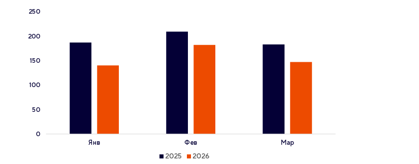
География: распределение предложения и спроса по ключевым районам/локациям
Анализ географической структуры качественного предложения складов Казани и агломерации показал два основных популярных направления: федеральная дорога М7 и автомобильная дорога федерального значения Р239. За редким исключением, складские комплексы расположены в черте города, но это в основном малогабаритные склады.
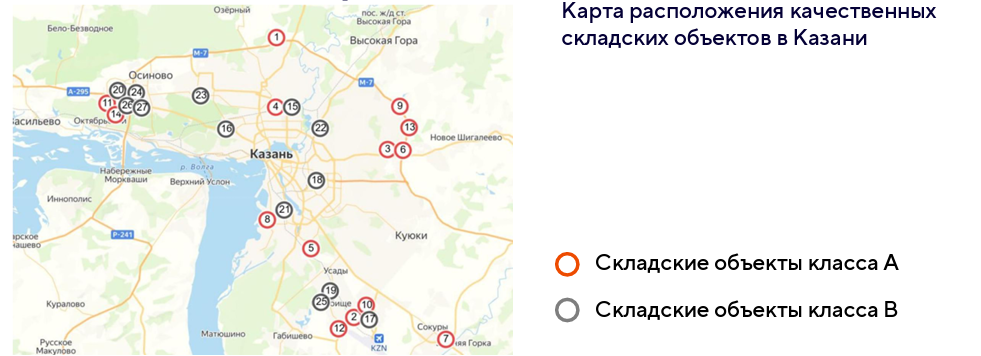
Тренды: новости и тенденции
- Основной объем сделок будет совершаться со спекулятивными площадями, которые уже вышли на рынок и будут введены в эксплуатацию/освободятся в ближайшее время.
- В 2026 году средняя площадь заключаемых арендных сделок в сегменте складов г. Казани будет сокращаться.
- В сегменте складской недвижимости наблюдается формирование небольших точек роста в формате Light Industrial. В 2026 году планируется ввод в эксплуатацию первого объекта данного формата на улице Тэцевская. Дополнительно о готовности реализовать проекты Light Industrial заявили в компании DoorHan, а также владельцы индустриального парка «Дружба».
Набережные Челны. Торговая недвижимость
Ключевые показатели рынка торговой недвижимости Набережных Челнов
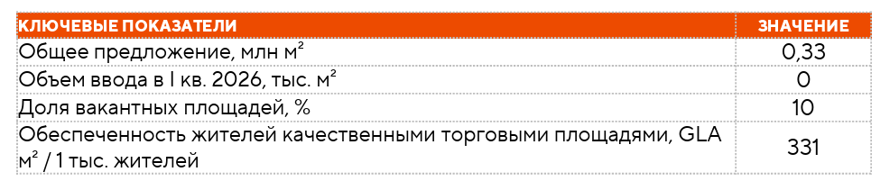
Предложение
Совокупное предложение в сегменте торговых центров представлено 26 объектами, общей площадью 0,33 млн. м². (учитывались торговые центры общей площадью свыше 3 000 м²). Наиболее качественных торговых центров в Набережных Челнах – 7. Общая площадь качественных объектов 181 тыс. м², арендуемая 130 тыс. м². Отбор объектов осуществлялся с учетом формата торгового центра, состава арендаторов, наличия федеральных и международных брендов, профессионального управления, а также трафика. В I квартале 2026 года ввод новых объектов на рынке торговых центров Набережных Челнов не зафиксирован. По состоянию на текущий момент запуск новых торговых центров в течение 2026 года не ожидается.
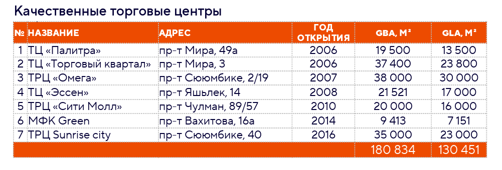
Набережные Челны. Торговая недвижимость
Вакансия
По состоянию на конец марта 2026 года уровень вакансии составил 10%, увеличившись на 3 п. п. в сравнении с IV кварталом 2025 года. В количественном выражении объём свободных торговых площадей составляет 12 тыс. м², а на конец года составлял 10 тыс. м². Расчёт доли вакантных площадей произведён на основании визуального осмотра помещений в торговых центрах. В расчёте учитываются площади помещений, в которых не ведется коммерческая деятельность. При этом договор аренды может быть уже подписан.
Спрос
В I квартале 2026 года рынок торговых центров Набережных Челнов демонстрирует снижение активности арендаторов по сравнению с предыдущим кварталом. За три месяца было открыто 6 новых магазинов, тогда как в IV квартале 2025 года количество открытий составляло 25 объектов. При этом число закрытых магазинов в I квартале составило 11 объектов, что чуть ниже показателя аналогичного периода предыдущего года (13 закрытий).
Открытия новых магазинов в I квартале 2026 года
География: распределение предложения и спроса по ключевым районам/локациям
Распределение торговых центров в Набережных Челнах
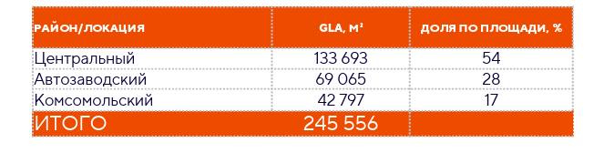
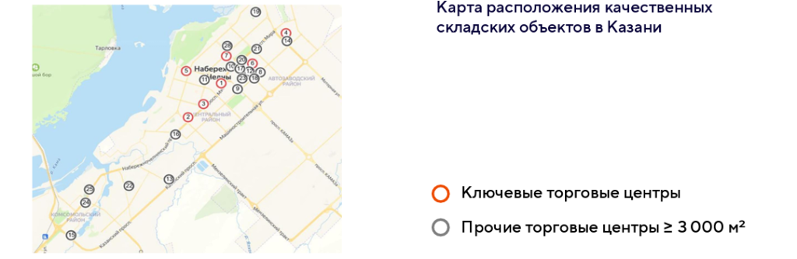
Стрит-ритейл
Оценка выполнена на основе данных сервиса онлайн-объявлений Avito с последующей группировкой предложений по районам города и диапазонам площади помещений. Такой подход позволяет определить средние уровни арендных ставок в разрезе типовых форматов и сопоставить стоимость аренды для различных категорий объектов. Средневзвешенная ставка аренды по городу составила 1 041 руб./м² в месяц.
Средняя ставка аренды на помещения формата стрит-ритейл с распределением по районам Н. Челнов и площади помещений, руб./м²
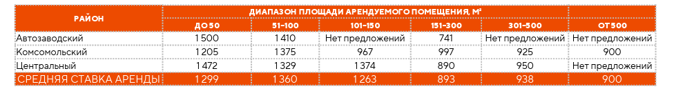
Средневзвешенная стоимость продажи коммерческих помещений в Набережных Челнах на конец марта 2026 года составила для первичных объектов — 157 794 руб./м², для вторичных объектов — 97 198 руб./м². При этом под первичными объектами подразумеваются помещения без отделки, вторичные — все остальные объекты. Сегмент стрит-ритейла в структуре первичного рынка Набережных Челнов не является массовым форматом. Предложение носит ограниченный характер и охватывает не все реализуемые проекты. В реализуемых жилых проектах встроенные коммерческие помещения присутствуют, но занимают невысокую долю, а часть объектов реализуется без данного формата.
Цены продажи на помещения формата стрит-ритейл, вторичный рынок в Набережных Челнах и площади помещений, руб./м²
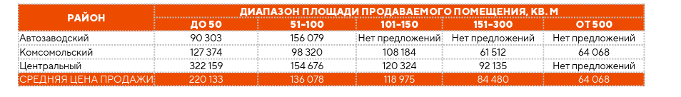
Для помещений формата стрит-ритейл (вторичный рынок) анализ показывает, что стоимость в большей степени зависит от площади помещения, чем от района расположения. При этом изменение площади демонстрирует прямую зависимость с уровнем цены.
Данные о ценах на коммерческие помещения, размещённые на открытых интернет-платформах, отражают лишь часть рынка и могут не в полной мере соответствовать фактическим условиям заключаемых сделок. Такие объекты, как правило, экспонируются дольше, пользуются меньшим спросом и чаще представляют собой предложения, менее привлекательные для арендаторов и инвесторов. В связи с этим результаты проведённого анализа как рынка продажи, так и аренды коммерческих помещений, основанные на данных экспозиции, следует рассматривать как ориентировочные и отражающие преимущественно параметры текущего предложения.
Набережные Челны. Офисная недвижимость
Предложение
Предложение в сегменте офисной недвижимости Набережных Челнов представлено 10 объектами, совокупной площадью 117 тыс. м², из которых 7 объектов можно отнести к категории качественных. Перечень качественных объектов приведен в таблице ниже, дальнейший анализ выполнен на их основе. Следует отметить, что отнесение к категории качественных носит условный характер и обусловлено особенностями локального рынка Набережных Челнов, где стандарты классификации менее формализованы по сравнению с крупнейшими городами.
Качественные объекты офисной недвижимости в Набережных Челнах
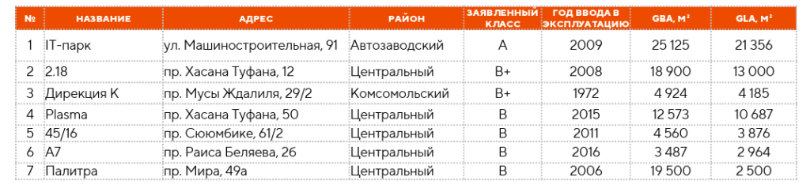
Структура предложений бизнес-центров по классам
Новое строительство
В I квартале 2026 года ввод новых объектов на рынке офисной недвижимости г. Набережные Челны не зафиксирован. По состоянию на дату Отчета запуск новых офисных объектов в течение 2026 года не ожидается.
Вакансия
По состоянию на конец марта 2026 года уровень вакансии в офисной недвижимости Набережных Челнов составил 0,6%, увеличившись на 0,4 п. п. в сравнении с IV кварталом 2025 года. В количественном выражении свободных офисных площадей в городе 361 м².
Арендные ставки
Средневзвешенная ставка аренды по рассматриваемому в анализе перечню бизнес-центров составила 1 014 руб./м² в месяц, включая НДС и эксплуатационные расходы. По сравнению с IV кварталом 2025 года показатель продемонстрировал незначительное изменение на 64 руб./м² (+6,7%).
Спрос
Основу спроса на офисные площади формируют локальные арендаторы. За рассматриваемый период объём вакантных площадей увеличился с 196 до 362 м², что соответствует отрицательному чистому поглощению – 166 м². Относительный темп заполнения составил около –0,2% от общей арендопригодной площади, при этом общий уровень вакансии остался низким всего 0,6%. Это свидетельствует о фактически стабильном рынке, где небольшие колебания свободной площади не оказывают значительного влияния на общий спрос. Вместе с тем для оценки динамики спроса на офисные помещения был проведен анализ поисковых запросов пользователей в сервисе Яндекс.Wordstat. В качестве базовых индикаторов использовались ключевые запросы «аренда офиса Набережные Челны» и «продажа офиса Набережные Челны», а также близкие по смыслу формулировки. Анализ структуры запросов показывает, что в сегменте аренды основной объем поискового интереса формируется одной ключевой фразой, тогда как в сегменте продажи — двумя базовыми запросами.
Динамика количества поисковых запросов по аренде офисов в Набережных Челнах, шт.*
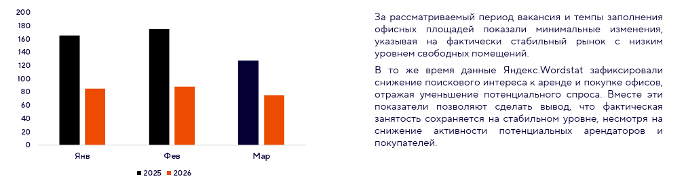
География: распределение предложения и спроса по ключевым районам/локациям
Распределение офисной недвижимости в Набережных Челнах
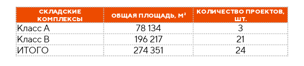
Больше всего офисной недвижимости Набережных Челнов сосредоточено в Автозаводском районе, далее — в Центральном, минимально — в Комсомольском.
Тренды и тенденции
- На рынке офисной недвижимости Набережных Челнов сохраняется ограниченное предложение качественных объектов бизнес-центров.
- По прогнозам на 2026 год новых проектов не ожидается, что потенциально может поддерживать низкий уровень вакансии и стабильность рынка.
Набережные Челны. Складская недвижимость
Предложение
Рынок складской недвижимости в Набережных Челнах находится на стадии формирования. В настоящее время рынок характеризуется высокой степенью фрагментации, а предложение носит неоднородный характер и представлено как новыми объектами, так и устаревшими и реконструированными зданиями, ранее не предназначенными для складского использования. На конец марта 2026 года совокупная площадь качественных (с некоторыми допущениями) спекулятивных объектов классов А, B составляет 274 тыс. м².
Производственно-складские комплексы спекулятивного формата в Набережные Челны
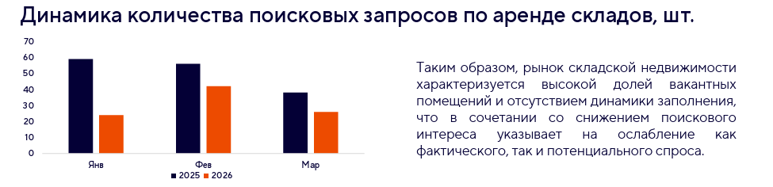
Новое строительство
В I квартале 2026 года ввод новых качественных объектов складской недвижимости в Набережных Челнах не зафиксирован. При этом девелоперская активность сохраняется. На момент исследования известно о следующих строящихся объектах:
● Производственно-складской комплекс «ПакПрестус». Планируемый ввод в эксплуатацию объекта во II квартале 2026 года, общая площадь 72 000 м². Объект строился в формате built-to-rent для компании Haier.
● АО «ТЭФ «КТС» реализует производственно-складской комплекс, общая площадь 12 968 м², в настоящее время строится первая очередь — четыре корпуса по 1 500 м² каждый.
● Складской комплекс на Машиностроительной улице. Планируемый ввод в эксплуатацию объекта в III квартале 2026 года, общая площадь 15 760 м².
Также в 2024 году Инвестиционный совет Татарстана одобрил строительство складского логистического комплекса «Барс Логистик» общей площадью 16 500 м². На текущий момент проект не реализован, дата ввода в эксплуатацию неизвестна.
Совокупно с учетом ввода в эксплуатацию всех строящихся качественных складских объектов в 2026 году предложение увеличится на 94 тыс. м².
Вакансия
По состоянию на конец марта 2026 года доля вакантных помещений в сегменте складской недвижимости Набережных Челнов в качественных объектах составила 20% и осталась на прежнем уровне по сравнению с IV кварталом 2025 года. В количественном выражении объем свободных складских площадей составил 53 тыс. м².
Арендные ставки
Средневзвешенная ставка аренды складских помещений по рассматриваемому перечню объектов составила 790 руб./м² в месяц, включая НДС и эксплуатационные расходы, осталась на прежнем уровне по сравнению с IV кварталом 2025 года. Средневзвешенная ставка аренды в складских комплексах класса A составила 920 руб./м² в месяц и осталась на прежнем уровне по сравнению с IV кварталом 2025 года. В комплексах класса B показатель составил 660 руб./м² в месяц, также без изменений относительно IV квартала 2025 года. Показатели арендных ставок рассчитаны на основе объектов с вакантными площадями, представленных в открытой экспозиции. В отдельных случаях, где информация о ставках была доступна для полностью заполненных объектов, данные включались в расчёт. По остальным полностью арендованным объектам данные не учитывались ввиду ограниченной доступности коммерческой информации.
Спрос
За рассматриваемый период объем вакантных складских площадей в качественных объектах остался на прежнем уровне и составил 53 тыс. м², что свидетельствует об отсутствии чистого поглощения. Относительный темп заполнения находился на нулевом уровне, при этом общий уровень вакансии сохраняется высоким — 20%. Сложившаяся ситуация указывает на слабую активность арендаторов и недостаточный спрос. Для оценки динамики спроса на складские помещения был проведен анализ поисковых запросов пользователей в сервисе Яндекс.Wordstat. В качестве базовых индикаторов использовались ключевые запросы «аренда склада Набережные Челны» и «купить склад Набережные Челны», которые формируют основную часть поискового интереса пользователей. Анализ структуры запросов показывает, что данные формулировки в разные месяцы обеспечивают от 85% до 100% совокупного числа показов по тематике складской недвижимости, что позволяет использовать их как репрезентативный индикатор динамики спроса.
По результатам анализа поисковых запросов в Яндекс.Wordstat, в I квартале 2026 года спрос на аренду складов в Набережных Челнах снизился на 39% по сравнению с тем же периодом 2025 года. Спрос на покупку складов за тот же период уменьшился на 83%. Данные показатели подкрепляются фактической активностью рынка, количество входящих запросов и обращений от потенциальных арендаторов и покупателей по результатам I квартала 2026 года низкое.
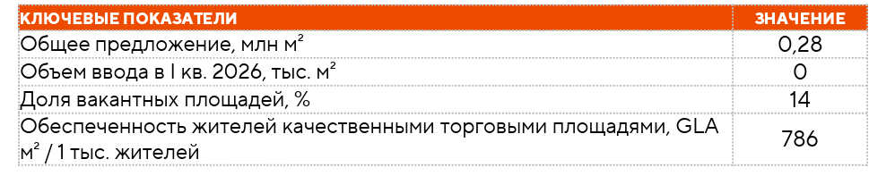
География: распределение предложения и спроса по ключевым районам/локациям
Анализ географической структуры качественного предложения складской недвижимости Набережных Челнов показывает, что основная часть складских комплексов сосредоточена в зоне, примыкающей к вспомогательному участку федеральной трассы М-12, выполняющему функцию объездной транспортной артерии города. В черте города складские объекты представлены в ограниченном объеме.
Тренды: новости и тенденции
- В Набережных Челнах сохраняется ограниченное предложение качественных складских комплексов класса A, востребованных крупными федеральными арендаторами и маркетплейсами, что формирует потенциал роста сегмента при нормализации экономической обстановки.
- Рынок складской недвижимости города представлен объектами с высокой степенью вариативности технических характеристик. Отличия касаются высоты потолков, допустимой нагрузки на пол, уровня оснащенности воротами и отметки пола относительно земли. Такая неоднородность требует внимательной оценки каждого объекта перед принятием решения об аренде.
Нижнекамск. Торговая недвижимость
Ключевые показатели рынка торговой недвижимости Нижнекамска
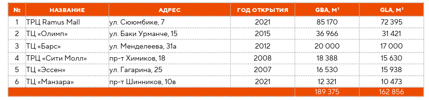
Уровень обеспеченности населения качественными торговыми площадями в Нижнекамске составляет 786 м² на 1 тыс. жителей, что значительно выше аналогичных показателей в Казани (266 м² на 1 тыс. жителей) и Набережных Челнах (331 м² на 1 тыс. жителей). Такая высокая обеспеченность указывает на перенасыщенность рынка, когда предложение существенно превышает фактические потребности населения, что неизбежно ведет к снижению ставок аренды и росту доли вакантных помещений. Подобные перенасыщенные рынки сложнее всего проходят кризисные этапы.
Предложение
Совокупное предложение в сегменте торговых центров представлено 19 объектами, общей площадью 0,28 млн м². (учитывались торговые центры общей площадью свыше 3 000 м²). Наиболее качественных торговых центров в Нижнекамске 6. Общая площадь качественных объектов 189 тыс. м², арендуемая 163 тыс. м². Отбор объектов осуществлялся с учетом формата торгового центра, структуры арендаторов, наличия федеральных и международных брендов, профессионального управления, а также покупательского трафика.
Качественные торговые центры Казани
Нижнекамск. Торговая недвижимость
Новое строительство
В I квартале 2026 года ввод новых объектов на рынке торговых центров Нижнекамска не зафиксирован. По состоянию на текущий момент запуск новых торговых центров в течение 2026 года не ожидается.
Вакансия
По состоянию на конец марта 2026 года уровень вакансии составил 14%. В количественном выражении объем свободных торговых площадей составил 23 тыс. м². Расчет доли вакантных площадей произведен на основании визуального осмотра. В расчете учитываются площади помещений, в которых не ведется коммерческая деятельность. При этом договор аренды может быть уже подписан. Сложившийся уровень вакансии указывает на формирование рынка арендатора, характеризующегося усилением конкуренции между торговыми центрами и необходимостью более гибкой ценовой политики со стороны собственников.
Спрос
Текущая динамика спроса на торговые площади характеризуется низкой активностью арендаторов на фоне повышенного уровня вакансии. За рассматриваемый период на рынке фиксируются единичные открытия, в частности, в торгово-развлекательном центре RAMUS MALL начало работу вьетнамское кафе «Фо Ханой». Одновременно наблюдаются закрытия арендаторов, включая уход крупного федерального оператора «М.Видео» из торгового центра «Сити Молл». В условиях сохраняющегося объема свободных площадей рынок характеризуется ограниченным притоком новых арендаторов и низким спросом.
География: распределение предложения и спроса по ключевым районам/локациям
Предложение в сегменте торговых центров Нижнекамска, сформированное объектами общей площадью свыше 3 000 м², в условиях отсутствия четко выраженного административного деления города определяется преимущественно их локационными характеристиками и распределено вдоль основных магистралей и в узлах их пересечения: проспектов Шинников, Мира, Химиков, Вахитова, а также улицы Корабельная и Менделеева.
Стрит-ритейл
В рамках Отчета проведён анализ рынка аренды коммерческих помещений в сегменте стрит-ритейла Нижнекамска. Оценка выполнена на основе данных сервиса онлайн-объявлений Avito с последующей группировкой предложений по диапазонам площади помещений. Средневзвешенная ставка аренды по городу составила 874 руб./м² в месяц, включая НДС (где применимо) и эксплуатационные расходы.
В рамках Отчета был проведён анализ структуры и параметров текущего предложения по продаже коммерческих помещений по диапазонам площади на основе данных экспозиции, представленных на сервисе онлайн-объявлений Avito. Результаты анализа сгруппированы и представлены в таблице ниже. Также на основе собранных данных была рассчитана средневзвешенная стоимость продажи коммерческих помещений в Нижнекамске которая, на конец марта 2026 года, составила для первичных объектов — 204 748 руб./м², для вторичных объектов — 104 376 руб./м². При этом под первичными объектами подразумеваются помещения без отделки, вторичные — все остальные объекты.

На первичном рынке цена квадратного метра снижается с ростом площади помещения. На вторичном рынке наблюдается та же тенденция: большие объекты продаются дешевле. В Нижнекамске застройщики выборочно включают помещения стрит-ритейла в состав жилых комплексов, преимущественно небольшие объекты площадью до 100 м². Крупные помещения, например, под продуктовые магазины, формируются с учётом предварительных договоров аренды ещё на этапе строительства. В целом коммерческие площади включаются ограниченно, а их доля в составе жилых комплексов остаётся невысокой, что связано с высокой насыщенностью рынка торговой недвижимости. Данные о ценах на коммерческие помещения, размещённые на открытых интернет-платформах, отражают лишь часть рынка и могут не в полной мере соответствовать фактическим условиям заключаемых сделок. Такие объекты, как правило, экспонируются дольше, пользуются меньшим спросом и чаще представляют собой предложения, менее привлекательные для арендаторов и инвесторов. В связи с этим результаты проведённого анализа как рынка продажи, так и аренды коммерческих помещений, основанные на данных экспозиции, следует рассматривать как ориентировочные и отражающие преимущественно параметры текущего предложения.
Новости и тенденции
- Рынок качественных торговых площадей Нижнекамска демонстрирует признаки перенасыщения: предложение объектов превышает потребности населения, что сдерживает рост арендных ставок и ограничивает потенциал для новых проектов. В таких условиях девелоперам важно уделять внимание подбору форматов и концепций помещений, способных привлекать покупателей и поддерживать активность арендаторов.
Нижнекаменск. Офисная недвижимость
Предложение
Рынок офисной недвижимости Нижнекамска характеризуется относительно невысокой степенью развития и отсутствием качественных объектов современного формата. Для анализа использовались имеющиеся предложения, которые отражают текущую структуру рынка. Основная часть экспозиции представлена объектами различного назначения и технического уровня, что указывает на отсутствие сформированного рынка профессиональных бизнес-центров в городе. Предложение в сегменте офисной недвижимости Нижнекамска представлено 7 объектами, совокупной площадью 19 тыс. м².
Объекты офисной недвижимости Нижнекамска
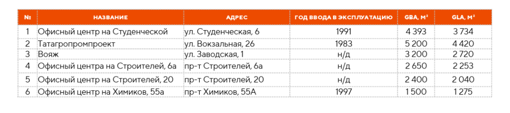
Существующее предложение офисных центров в Нижнекамске представлено ограниченным числом объектов, большинство из которых введено в эксплуатацию до 2000 года. Эти здания в целом не соответствуют современным стандартам по классу и функциональности и имеют сравнительно небольшие площади. Спрос на качественные офисные помещения со стороны крупных арендаторов остаётся низким, что объясняется структурой местного бизнеса и ограниченной деловой активностью города. В то же время дефицит современных объектов создаёт потенциальную нишу для качественного строительства при улучшении экономической обстановки.
Новое строительство
В
I квартале 2026 года ввод новых объектов на рынке офисной недвижимости Нижнекамска не зафиксирован. По состоянию на дату Отчета запуск новых офисных объектов в течение 2026 года не ожидается. Вместе с тем ГК «РаМус» завершила строительство административного здания общей площадью около 7 тыс. м², потенциально объект может быть использован как бизнес-центр. На текущий момент собственник не рассматривает сдачу помещений в аренду, предлагая объект к продаже целиком или по этажам. В случае реализации здания и запуска как бизнес-центра, то рынок офисной недвижимости Нижнекамска пополнится современным качественным объектом.
Вакансия
По состоянию на конец марта 2026 года уровень вакансии в офисной недвижимости Нижнекамск составил 11%. В количественном выражении объем свободных офисных площадей составил 1 808 м²
Арендные ставки
Средневзвешенная ставка аренды по рассматриваемому в анализе перечню бизнес-центров составила 720 руб./м² в месяц, включая НДС и эксплуатационные расходы.
Спрос
Уровень вакансии на рынке офисной недвижимости Нижнекамска составил 11%, что соответствует 1 808 м² свободных площадей. При ограниченном объёме предложения такой показатель считается высоким и указывает на низкий спрос и избыточность имеющегося офисного предложения. Ситуация отражает слабую активность локального бизнеса и отсутствие крупных арендаторов, способных существенно повлиять на наполняемость рынка, что типично для более развитых офисных сегментов. Вместе с тем для оценки динамики спроса на офисные помещения был проведен анализ поисковых запросов пользователей в сервисе Яндекс.Wordstat. В качестве базовых индикаторов использовались ключевые запросы «аренда офиса Нижнекамск» и «продажа офиса Нижнекамск», а также близкие по смыслу формулировки. Анализ структуры запросов показывает, что в сегменте аренды основной объем поискового интереса формируется одной ключевой фразой, тогда как в сегменте продажи — двумя базовыми запросами.
По результатам анализа поисковых запросов в Яндекс.Wordstat, в I квартале 2026 года спрос на аренду офисов в Нижнекамске снизился на 31% по сравнению с тем же периодом 2025 года. Спрос на покупку офисов в 2026 году отсутствуют. Данные показатели подкрепляются фактической активностью рынка, количество входящих запросов и обращений от потенциальных арендаторов и покупателей по результатам I квартала 2026 года низкое.
Динамика количества поисковых запросов по аренде офисов, шт.
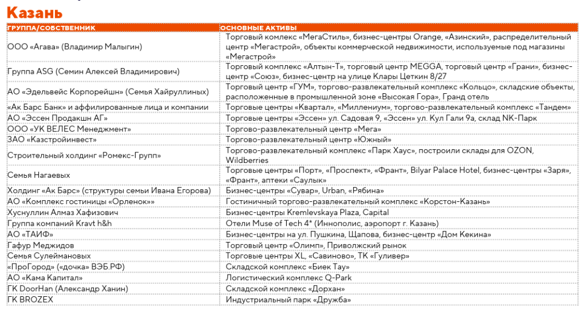
География: распределение предложения и спроса по ключевым районам/локациям
Анализ географического распределения бизнес-центров Нижнекамска показывает, что объекты преимущественно сосредоточены в центральной части города и вдоль ключевых транспортных магистралей. Формирование выраженных деловых кластеров при этом не наблюдается: офисные центры размещены точечно и не образуют единой офисной зоны. Отдельные объекты расположены в периферийных частях города, однако их доля незначительна.
Тренды и тенденции
- На рынке офисной недвижимости Нижнекамска отсутствует предложение качественных объектов.
- Согласно мастер-плану развития Нижнекамска в районе парка «Нефтехимиков» планируется строительство крупного бизнес-центра с конференц-залами, бизнес-инкубатором и современной инфраструктурой для поддержки локального бизнеса. Реализация проекта пока не начата.
Нижнекаменск. Складская недвижимость
Предложение
Рынок складской недвижимости Нижнекамска находится на начальной стадии формирования и характеризуется крайне низким уровнем развития. Полноценный сегмент современных складских комплексов в городе фактически отсутствует, рынок сохраняет локальный характер. Так как Нижнекамск — индустриальный центр, большая часть складских функций решается внутри самих предприятий или через размещение в индустриальных парках, компании предпочитают собственные или арендованные площади в рамках промпарков, часто под свои производственные и логистические процессы, а не под сдачу на рынке. На конец марта 2026 года совокупная площадь качественных (с некоторыми допущениями) спекулятивных объектов составляет 33 тыс. м².
Новое строительство
В I квартале 2026 года ввод новых качественных объектов складской недвижимости в Нижнекамске не зафиксирован. В части нового строительства АО «Эдельвейс Корпорейшн» реализует складской объект по ул. Первопроходцев общей площадью около 5 тыс. м², планируемый срок завершения проекта пока не определен.
Вакансия
По состоянию на конец марта 2026 года уровень вакансии в складской недвижимости Нижнекамска в качественных объектах составил 34%. В количественном выражении объем свободных складских площадей составил 11,5 тыс. м².
Арендные ставки
Средневзвешенная ставка аренды складских помещений по рассматриваемому перечню объектов составила 400 руб./м² в месяц, включая НДС и эксплуатационные расходы.
Спрос
За рассматриваемый период объем вакантных складских площадей составил 11,5 тыс. м², что является высоким значением с учётом небольшого объёма рынка. При этом общий уровень вакансии высокий — 34%. Сложившаяся ситуация указывает на низкий спрос. Также для оценки динамики спроса на складские помещения был проведен анализ поисковых запросов пользователей в сервисе Яндекс.Wordstat. В качестве базовых индикаторов использовались ключевые запросы «аренда склада Нижнекамск» и «купить склад Нижнекамск», которые формируют основную часть поискового интереса пользователей. Анализ структуры запросов показывает, что данные формулировки в разные месяцы обеспечивают от 85% до 100% совокупного числа показов по тематике складской недвижимости, что позволяет использовать их как репрезентативный индикатор динамики спроса.
По результатам анализа поисковых запросов в Яндекс.Wordstat, в I квартале 2026 года спрос на аренду и покупку складских помещений в Нижнекамске не зафиксирован: по ключевым запросам отсутствуют показы. Это свидетельствует о фактическом отсутствии сформированного спроса на складскую недвижимость в онлайнпоиске. Данные показатели подкрепляются фактической активностью рынка, количество входящих запросов и обращений от потенциальных арендаторов и покупателей по результатам I квартала 2026 года низкое. В совокупности представленные показатели свидетельствуют об отсутствии сформированного спроса на рынке складской недвижимости Нижнекамска.
Тренды: новости и тенденции
- В Нижнекамске одобрен масштабный проект металлургического логистического хаба стоимостью 16,9 млрд руб. на площади 54 га. Комплекс будет включать таможенный терминал, речной порт и железнодорожную ветку, а также 100 тыс. м² складских помещений, предназначенных для крупнейших производителей — «ММК», «Северсталь» и «СИБУР». Реализация проекта позволит значительно усилить экспорт российской металлопродукции, в том числе в Иран и Турцию.
- Крупные промышленные арендаторы, включая компании нефтехимии и металлургии, предпочитают использовать собственные объекты, не формируя потребность в аренде площадей.
- Классического спекулятивного строительства почти нет, девелоперы не рискуют заходить на стройку без арендатора.
Ключевые игроки рынка коммерческой недвижимости
Казань
Рынок коммерческой недвижимости Казани сформирован широким кругом собственников и девелоперов, среди которых представлены как локальные предприниматели и региональные группы компаний, так и федеральные игроки. В разных сегментах рынка структура владения активами отличается по степени концентрации, однако в целом рынок характеризуется сочетанием частных инвесторов, девелоперских компаний и крупных корпоративных собственников. Для оценки структуры рынка собственников был проведен анализ информации из корпоративных баз данных, включая данные СПАРК, а также открытых источников. На его основе сформирована сводная таблица ключевых владельцев и девелоперов, представленных на рынке коммерческой недвижимости Казани.
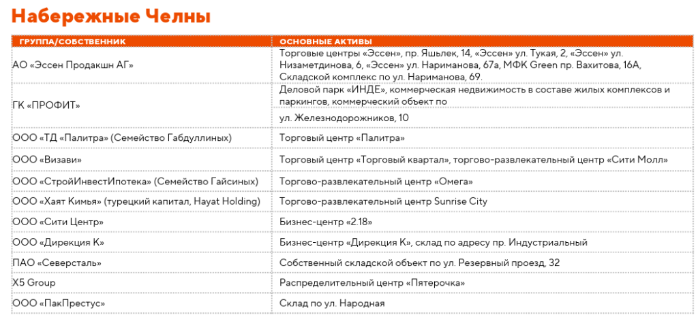
Набережные Челны
Рынок коммерческой недвижимости Набережных Челнов сформирован преимущественно локальными собственниками, региональными девелоперами и промышленными предприятиями, которые исторически играют значимую роль в структуре владения активами города. Существенная часть складской недвижимости представлена объектами, сформированными на базе производственной инфраструктуры, часть из которых используется предприятиями для собственных логистических нужд. Рынок торговой недвижимости Набережных Челнов демонстрирует структуру собственности, схожую с Казанью: доминируют семейные локальные структуры и региональные компании с участием федеральных и зарубежных девелоперов. Офисная недвижимость характеризуется высокой фрагментированностью объекты находятся в собственности большого числа владельцев, среди которых преобладают местные игроки. Для оценки структуры владения и концентрации активов проведен анализ информации из корпоративных баз данных, включая данные СПАРК, а также открытых источников. На основе собранной информации сформирована таблица ключевых владельцев и девелоперов, представленных на рынке коммерческой недвижимости Набережных Челнов.
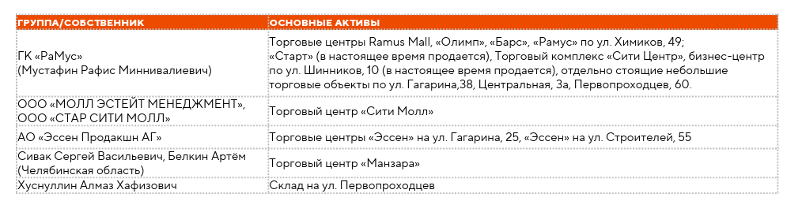
Нижнекамск
Владение объектами торговой недвижимости в Нижнекамске сосредоточено в руках нескольких крупных девелоперов и инвесторов, что обеспечивает высокий уровень концентрации активов. В офисной и складской недвижимости структура владения более разрознена: объекты находятся в собственности множества локальных предпринимателей и региональных компаний. Для оценки структуры владения и концентрации активов проведен анализ информации из корпоративных баз данных, включая данные СПАРК, а также открытых источников. На основе собранной информации сформирована таблица ключевых владельцев и девелоперов, представленных на рынке коммерческой недвижимости Нижнекамска.
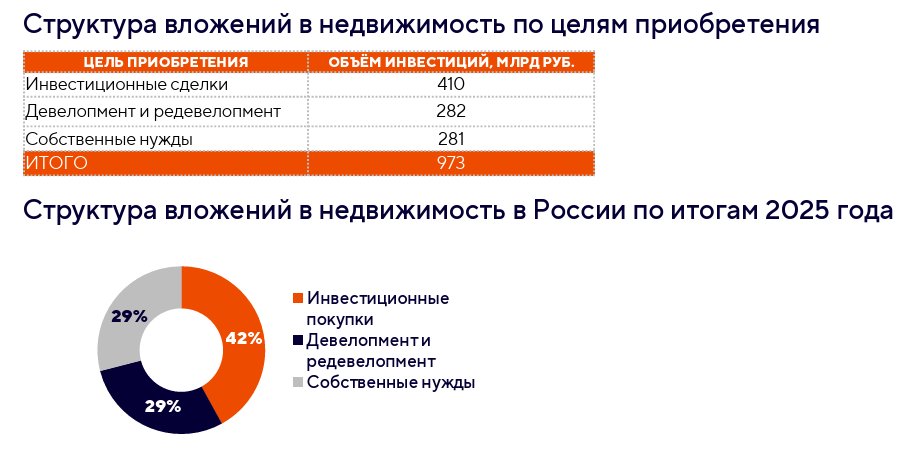
Инвестиционный анализ
Структура инвестиций в недвижимость
Инвестиции в недвижимость остаются одним из ключевых направлений вложения капитала в экономике страны. По данным Министерства экономики Республики Татарстан по итогам 2025 года объём инвестиций в основной капитал достиг 1,65 трлн рублей, что почти на 17% выше, чем в 2024-м (1,4 трлн рублей). По данным IBC Real Estate, совокупный объём инвестиций в коммерческую недвижимость России по итогам 2025 года составил 973 млрд рублей. Показатель остается значительно выше уровней докризисного периода, текущий объем более чем в три раза превышает среднегодовые значения 2016–2021 годов. Это указывает на сохраняющийся интерес инвесторов к недвижимости даже в условиях сдержанного экономического роста. При этом часть объема отражает перераспределение активов иностранных компаний, покинувших рынок. В структуре рынка заметную роль в 2025 году сыграли инвестиционные сделки. На них пришлось около 50% общего объема вложений, тогда как годом ранее показатель составлял около 24%. Рост доли связан прежде всего с завершением нескольких крупных сделок, включая операции по передаче активов иностранных компаний российским инвесторам.

В 2026 году рынок, вероятно, будет развиваться в условиях сдержанного экономического роста и высокой стоимости заемного финансирования, что может ограничивать активность части инвесторов. По оценкам IBC Real Estate, совокупный объём инвестиций в недвижимость может составить 650–700 млрд руб. Для сравнения, в предыдущие годы объем инвестиционных сделок развивался следующим образом: в 2020 году он составил 331 млрд руб., в 2021 году — 367 млрд руб., в 2022 году — 521 млрд руб., в 2023 году — 961 млрд руб., в 2024 году — 1 315 млрд руб., а по итогам 2025 года — 973 млрд руб.
Динамика объёма инвестиционных сделок на рынке недвижимости России, млрд руб.
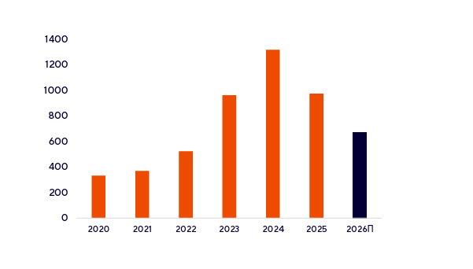
Основная часть инвестиционной активности традиционно будет сосредоточена в крупнейших рынках страны. На Москву может приходиться порядка 500–550 млрд руб., на Санкт-Петербург — около 80–90 млрд руб., тогда как остальные 60–70 млрд руб. распределятся между региональными рынками. Объем инвестиций в коммерческую недвижимость России за январь - март 2026 года составил 61 млрд рублей, что на 50% меньше по сравнению с аналогичным периодом 2025 года.
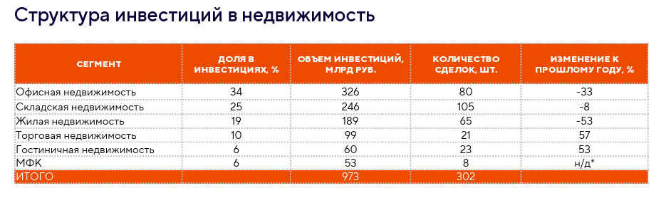
По оперативным данным Росстата, в 2025 году сальдированный финансовый результат организаций (без малого бизнеса, кредитных и некредитных финансовых организаций, а также госучреждений) составил 27072,9 млрд рублей, что на 3,9% ниже показателя 2024 года. На фоне сокращения финансового результата компаний ожидается замедление инвестиционной активности. Снижение финансового результата ограничивает внутренние источники финансирования и делает компании более избирательными в реализации новых проектов и инвестировании.
Ключевые сделки: крупнейшие сделки, портфельные покупки, сделки с отдельными объектами
По оценкам, в 2025 году в Казани было закрыто инвестиционных сделок на сумму более 12 млрд рублей. Из них 4 транзакции приходятся на складскую недвижимость, по одной — на гостиничный и жилой сегмент.
Инвестиционные сделки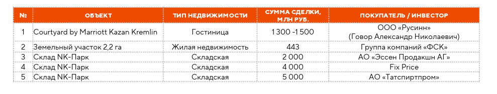
Помимо совершённых сделок, рынок коммерческой недвижимости Татарстана демонстрирует активность по продаже объектов. В таблице ниже приведены примеры крупных объектов, выставленных на продажу по данным открытых источников и агентств недвижимости.

Прогнозы и выводы
Сводные выводы по каждому сегменту рынка коммерческой недвижимости по итогам квартала Казань
Торговый сегмент
Рынок торговой недвижимости Казани показывает смешанную динамику. Вакансия снизилась до 5% (-1 п. п. к IV кварталу 2025 года), по сравнению с аналогичным периодом 2025 года показатель также снизился на 1 п. п. За квартал открылось 13 новых магазинов против 16 в I квартале 2025 года, что указывает на замедление притока новых арендаторов. Посещаемость торговых центров также демонстрирует неоднородную динамику: в январе наблюдался рост до 333 человек на 1000 кв. м GLA в день (+12% к январю 2025), а в феврале показатель снизился до 282 человек (-4% к февралю 2025). Общая ситуация остаётся стабильной, но рынок пока не демонстрирует устойчивого улучшения.
Офисный сегмент
Рынок офисной недвижимости Казани характеризуется ограниченным спросом со стороны арендаторов. По состоянию на конец марта 2026 года уровень вакансии составил 7,2% (+0,5 п. п. к предыдущему периоду), объём вакантных площадей увеличился с 31,7 до 33,8 тыс. м². По сравнению с аналогичным периодом 2025 года уровень вакансии вырос с 4% до 7,2%, что отражает существенное увеличение объёма свободных площадей. Средневзвешенная ставка аренды по рынку составила 1 968 руб./м² в месяц, что на 0,6% ниже, чем в предыдущем квартале. В сравнении с аналогичным периодом 2025 года, когда показатель составлял 1 662 руб./м² в месяц, ставка выросла на 18,4%. В бизнес-центрах класса A ставка составила 2 843 руб./м² в месяц (+0,5% за квартал; +5,5% к I кварталу 2025 года), в объектах класса B+ — 1 675 руб./м² в месяц (+0,5% за квартал; +17,6% к I кварталу 2025 года)
Складской сегмент
В сегменте складской недвижимости Казани сохраняется высокая доля свободных площадей. По состоянию на конец марта 2026 года уровень вакансии составил 20% (-3 п. п. к IV кварталу 2025 года), а объём свободных площадей снизился с 132 000 до 117 000 м². По сравнению с аналогичным периодом 2025 года показатель вакансии вырос с 3,4% до 20%, что отражает существенное увеличение доли свободных площадей на рынке. Средневзвешенная ставка аренды по рынку составила 1 270 руб./м² в месяц. В складских комплексах класса A ставка составила 1 450 руб./м² в месяц, снизившись на 3,3% по сравнению с IV кварталом 2025 года, при этом по сравнению с аналогичным периодом 2025 года (1 400 руб./м² в месяц) показатель увеличился на 3,6%. В классе B+ ставка составила 740 руб./м² в месяц. Совокупное предложение с учётом всех строящихся объектов в 2026 году увеличится на 176 тыс. м². Несмотря на частичное сокращение вакантных площадей, активность арендаторов остаётся низкой, и рынок пока не демонстрирует признаков оживления, при этом ставки продемонстрировали незначительное снижение.
Сводные выводы по каждому сегменту рынка коммерческой недвижимости по итогам квартала Набережные Челны
Торговый сегмент
Рынок торговой недвижимости Набережных Челнов демонстрирует низкую активность арендаторов и рост вакантных площадей. По состоянию на конец марта 2026 года уровень вакансии составил 10% (+3 п. п. к IV кварталу 2025 года), а объём свободных торговых площадей увеличился с 10 до 12 тыс. м². В I квартале 2026 года за три месяца открылось 6 новых магазинов против 25 в IV квартале 2025 года. Рынок сохраняет ограниченную активность без признаков восстановления.
Офисный сегмент
Рынок офисной недвижимости Набережных Челнов остаётся стабильным, но ограниченным по размеру и качеству объектов. По состоянию на конец марта 2026 года уровень вакансии составил 0,6% (+0,4 п. п. к IV кварталу 2025 года), объём вакантных площадей увеличился с 196 до 362 м². Средневзвешенная ставка аренды составила 1014 руб./м² в месяц, продемонстрировав незначительное увеличение на 6,7% по сравнению с предыдущим кварталом.
Складской сегмент
В целом рынок складской недвижимости Набережных Челнов характеризуется невысоким уровнем развития и значительной долей свободных площадей, сохраняется ограниченное предложение современных складских комплексов класса A. По состоянию на конец марта 2026 года уровень вакансии в сегменте качественной складской недвижимости Набережных Челнов составил 20% и не изменился по сравнению с IV кварталом 2025 года. Средневзвешенная ставка аренды по рассматриваемым объектам сохранилась на уровне 790 руб./м² в месяц. Ставки аренды в разрезе классов также остались без изменений: в объектах класса A — 920 руб./м² в месяц, класса B — 660 руб./м² в месяц. Объем вакантных площадей составил 53 тыс. м², не изменившись за отчетный период.
Сводные выводы по каждому сегменту рынка коммерческой недвижимости по итогам квартала Нижнекамск
Торговый сегмент
На рынке торгового сегмента Нижнекамска наблюдается дисбаланс между предложением и спросом в сторону избытка предложения, что оказывает сдерживающее влияние на развитие рынка. Уровень обеспеченности торговыми площадями составляет 786 м² на 1 тыс. жителей, что значительно выше показателей Казани и Набережных Челнов. По состоянию на конец марта 2026 года уровень вакансии составил 14%, объём свободных площадей — 23 тыс. м². Текущая динамика характеризуется низкой активностью арендаторов, на рынке фиксируются единичные открытия, что отражает ограниченный спрос и отсутствие предпосылок для активного развития сегмента.
Офисный сегмент
Рынок офисной недвижимости Нижнекамска характеризуется ограниченным развитием и низким качеством существующего предложения. По состоянию на конец марта 2026 года уровень вакансии составил 11%, объём свободных площадей — 1 808 м², что при небольшом размере рынка указывает на избыточность предложения и слабый спрос. Средневзвешенная ставка аренды составила 720 руб./м² в месяц. Сложившаяся ситуация обусловлена низкой активностью локального бизнеса и ограниченным спросом на офисы.
Складской сегмент
Рынок складской недвижимости Нижнекамска находится на начальной стадии развития и практически не представлен современными объектами, сохраняет локальный характер. Средневзвешенная ставка аренды составила 400 руб./м² в месяц. По состоянию на конец марта 2026 года уровень вакансии составил 34%, объём свободных площадей — 11,5 тыс. м². Такие показатели является высокими с учётом ограниченного объёма рынка и отражает низкий спрос на склады в городе.
Прогнозы по сегментам: отдельные прогнозы для офисного, торгового, складского и по итогам квартала
Торговый сегмент
- Удаленной занятости в перспективе, вероятно, не станет существенно меньше. Это будет влиять на структуру посещаемости торговых центров снижается доля спонтанных визитов по пути с работы, тогда как посещения все чаще носят целевой или досуговый характер.
- Экономическая ситуация для значительной части населения остается напряженной многие домохозяйства фактически живут от зарплаты до зарплаты, направляя основную часть доходов на текущие расходы. По данным опроса инФОМ, проведенного по заказу Банк России в ноябре 2025 года, 65% россиян не имеют сбережений на случай потери основного источника дохода, что указывает на ограниченную финансовую устойчивость населения и высокую зависимость благосостояния домохозяйств от регулярных доходов. Для рынка коммерческой недвижимости это формирует более осторожную стратегию развития у арендаторов. В прогнозе это означает, что ограниченная финансовая устойчивость населения будет сдерживать рост потребительского спроса и замедлять посещаемость торговых центров. Поскольку часть арендаторов платит аренду в зависимости от объёма продаж, снижение розничного товарооборота (РТО) приведёт к уменьшению арендных платежей, а, следовательно, снизит доходы собственников объектов.
Прогнозы по сегментам: отдельные прогнозы для офисного, торгового, складского и по итогам квартала
Торговый сегмент
- Удаленной занятости в перспективе, вероятно, не станет существенно меньше. Это будет влиять на структуру посещаемости торговых центров снижается доля спонтанных визитов по пути с работы, тогда как посещения все чаще носят целевой или досуговый характер.
- Экономическая ситуация для значительной части населения остается напряженной многие домохозяйства фактически живут от зарплаты до зарплаты, направляя основную часть доходов на текущие расходы. По данным опроса инФОМ, проведенного по заказу Банк России в ноябре 2025 года, 65% россиян не имеют сбережений на случай потери основного источника дохода, что указывает на ограниченную финансовую устойчивость населения и высокую зависимость благосостояния домохозяйств от регулярных доходов. Для рынка коммерческой недвижимости это формирует более осторожную стратегию развития у арендаторов. В прогнозе это означает, что ограниченная финансовая устойчивость населения будет сдерживать рост потребительского спроса и замедлять посещаемость торговых центров. Поскольку часть арендаторов платит аренду в зависимости от объёма продаж, снижение розничного товарооборота (РТО) приведёт к уменьшению арендных платежей, а, следовательно, снизит доходы собственников объектов.
- По данным Банк России, доля просроченной задолженности в портфеле розничных кредитов увеличилась с 3,6% на конец 2024 года до 4,6% на конец 2025 года. Рост показателя на 1 п. п. Такая динамика отражает некоторое ухудшение качества розничного кредитного портфеля и может указывать на рост долговой нагрузки населения. В случае сохранения тенденции это может оказывать сдерживающее влияние на потребительские расходы, что является одним из ключевых факторов, формирующих выручку арендаторов и спрос на торговые площади.
- Текущая практика девелопмента жилых комплексов демонстрирует ориентацию на низкозатратные и быстроокупаемые форматы коммерческой недвижимости, вместо интеграции полноформатных торговых центров девелоперы ограничиваются встроенными помещениями стрит-ритейла, а также всё чаще рассматривают наземные паркинги как альтернативный ресурс для размещения коммерческих функций. Отдельные уровни или части паркингов адаптируются под аренду, что позволяет повысить доходность проекта без существенного увеличения капитальных затрат.
- Ожидается дальнейшая трансформация торговых центров в многофункциональные пространства. В современных концепциях объектов все чаще предусматривается сочетание не менее трех функциональных направлений — помимо ритейла, в структуру торговых центров интегрируются общественное питание, развлечения, спортивные и wellness-пространства, коворкинги, образовательные и сервисные функции. В связи с этим часть площадей, ранее занимаемых магазинами одежды, техники и продуктового ритейла, может быть перепрофилирована под фудкорты, зоны развлечений, фитнес-центры, медицинские клиники и офисные пространства. Также в перспективе в торговых центрах возможно развитие сервисной инфраструктуры, включая размещение отделений МФЦ и других общественных сервисов.
Офисный сегмент
- На рынке офисной недвижимости наблюдается удлинение цикла принятия решений со стороны арендаторов. Компании более тщательно оценивают расходы на аренду.
- Для офисного сегмента ключевой тенденцией остается оптимизация площадей. Бизнес стремится снизить издержки на содержание пустующих рабочих мест и повысить отдачу от каждого квадратного метра.
- В текущих рыночных условиях, офисный сегмент характеризуется ростом уровня вакансии и снижением активности со стороны арендаторов. Сегодня арендаторы ожидают от собственников и управляющих компаний не просто предоставления площади, а партнёрского подхода, предполагающего гибкое реагирование на изменения численности персонала, технологические потребности и организационные особенности бизнеса. В этих условиях способность собственника оперативно адаптировать пространство под запросы клиента становится ключевым фактором конкурентоспособности объекта и важнейшим инструментом удержания арендаторов
Складской сегмент
- В первой половине 2026 года на рынке складской недвижимости ожидается дальнейший рост вакансии. Если ранее вакантные площади появлялись преимущественно из-за высоких арендных ставок, то сегодня их избыточное предложение объясняется низким уровнем спроса на рынке. При этом ввод новых объектов, финансирование которых было осуществлено 2–3 года назад, продолжается. Прогнозируемое превышение предложения над спросом сохранится. Параллельно продолжается оптимизация складских площадей, развивается сегмент субаренды.
- С учётом ожидаемого пополнения рынка дополнительным объемом не законтрактованного спекулятивного предложения в складском сегменте предпосылки для роста ставок аренды отсутствуют.
Ключевые выводы и рекомендации: сводка самых важных инсайтов и рекомендации для инвесторов, девелоперов и арендаторов
- На рынке недвижимости становится важным подход, при котором решения оцениваются не только по характеристикам конкретного объекта, но и с учётом общерыночной конъюнктуры, что позволяет более точно оценивать потенциал проектов и связанные с ними риски.
- Увеличение налоговой нагрузки и замедление снижения ключевой ставки создают условия дорогого капитала. В результате участники рынка коммерческой недвижимости становятся более осторожными в инвестиционных решениях, а девелоперы — более избирательными при запуске новых проектов, нередко перенося сроки ввода строящихся объектов на фоне охлаждения рынка. В этих условиях рекомендуется пересматривать стратегию запуска проектов, отдавая приоритет низко рискованным и быстроокупаемым объектам, закладывать буферные сроки ввода в эксплуатацию и предусматривать гибкие финансовые сценарии с учетом дорогого капитала, чтобы минимизировать инвестиционные риски и обеспечить стабильность денежных потоков.
- На фоне сохраняющейся геополитической неопределённости и усиления глобальных рисков наблюдается рост осторожности со стороны инвесторов. Ожидания потенциальной эскалации международной напряжённости, включая сценарии крупных военных конфликтов, формируют сдержанный инвестиционный настрой, что приводит к отсрочке по принятию решений о вложениях в коммерческую недвижимость и снижению активности на рынке.
- На фоне практически полной остановки программ развития компаний, особенно в ритейле и складском сегменте, снижаются темпы заполнения новых и свободных помещений. Количество запросов на досрочное расторжение договоров, отмену индексации и корректировку условий аренды в сторону снижения увеличивалось с января по март.
- Во всех сегментах коммерческой недвижимости увеличивается разрыв между запрашиваемой ставкой аренды и фактической ставкой по сделке. Девелоперам рекомендуется корректировать ценовые ожидания и закладывать более консервативные параметры арендных ставок при финансовом моделировании, одновременно предусматривая гибкие условия аренды.
- Доходность депозитов постепенно снижается, при этом усиливается налоговая нагрузка на процентные доходы. На этом фоне коммерческая недвижимость вновь может стать инструментом для долгосрочных инвестиций. Однако, в отличие от депозитов, где решения принимаются быстро, в коммерческой недвижимости цикл принятия решений остается более длительным и поэтому быстрых изменений не будет.
- В перспективе, если крупные компании начнут учитывать ESG-принципы при размещении офисов в регионах, экологичные и энергоэффективные площади могут стать востребованной нишей, к которой рынок должен быть готов.
- Отсутствие в Республике Татарстан мер поддержки, сопоставимых с московской программой МПТ, ограничивает развитие и строительство торговых, офисных и складских объектов в составе жилых комплексов.

Расскажите нам о своем проекте
Кратко опишите задачу: наш специалист свяжется с вами в ближайшее время, чтобы обсудить детали.